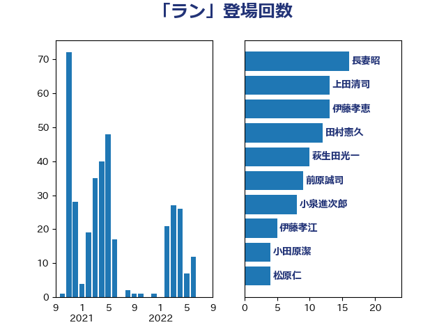

単語「ラン」

| 長妻昭 | 立憲民主党 | 16 回 |
| 上田清司 | 国民民主党 | 13 回 |
| 伊藤孝恵 | 国民民主党 | 13 回 |
| 田村憲久 | 自由民主党 | 12 回 |
| 萩生田光一 | 自由民主党 | 10 回 |
| 前原誠司 | 国民民主党 | 9 回 |
| 小泉進次郎 | 自由民主党 | 8 回 |
| 伊藤孝江 | 公明党 | 5 回 |
| 小田原潔 | 自由民主党 | 4 回 |
| 松原仁 | 立憲民主党 | 4 回 |
| 梶山弘志 | 自由民主党 | 4 回 |
| 浅野哲 | 国民民主党 | 4 回 |
| 重徳和彦 | 立憲民主党 | 4 回 |
| 下条みつ | 立憲民主党 | 3 回 |
| 堂故茂 | 自由民主党 | 3 回 |
| 平井卓也 | 自由民主党 | 3 回 |
| 日下正喜 | 公明党 | 3 回 |
| 浜田聡 | NHK党 | 3 回 |
| 猪口邦子 | 自由民主党 | 3 回 |
| 石井苗子 | 日本維新の会 | 3 回 |
| 赤木正幸 | 日本維新の会 | 3 回 |
| 鈴木俊一 | 自由民主党 | 3 回 |
| 高木かおり | 日本維新の会 | 3 回 |
| 高野光二郎 | 自由民主党 | 3 回 |
| 三浦靖 | 自由民主党 | 2 回 |
| 中島克仁 | 立憲民主党 | 2 回 |
| 古川俊治 | 自由民主党 | 2 回 |
| 和田義明 | 自由民主党 | 2 回 |
| 國重徹 | 公明党 | 2 回 |
| 坂本哲志 | 自由民主党 | 2 回 |
| 坂本祐之輔 | 立憲民主党 | 2 回 |
| 塩崎彰久 | 自由民主党 | 2 回 |
| 安江伸夫 | 公明党 | 2 回 |
| 安達澄 | 無所属 | 2 回 |
| 宮本周司 | 自由民主党 | 2 回 |
| 宮本徹 | 日本共産党 | 2 回 |
| 小林茂樹 | 自由民主党 | 2 回 |
| 山崎誠 | 立憲民主党 | 2 回 |
| 岬麻紀 | 日本維新の会 | 2 回 |
| 末松信介 | 自由民主党 | 2 回 |
| 杉尾秀哉 | 立憲民主党 | 2 回 |
| 林芳正 | 自由民主党 | 2 回 |
| 柚木道義 | 立憲民主党 | 2 回 |
| 柳ヶ瀬裕文 | 日本維新の会 | 2 回 |
| 柴田巧 | 日本維新の会 | 2 回 |
| 海江田万里 | 立憲民主党 | 2 回 |
| 田村まみ | 国民民主党 | 2 回 |
| 石川大我 | 立憲民主党 | 2 回 |
| 笠浩史 | 無所属 | 2 回 |
| 茂木敏充 | 自由民主党 | 2 回 |
| 西岡秀子 | 国民民主党 | 2 回 |
| ながえ孝子 | 無所属 | 1 回 |
| 三木亨 | 自由民主党 | 1 回 |
| 下野六太 | 公明党 | 1 回 |
| 中谷一馬 | 立憲民主党 | 1 回 |
| 井上哲士 | 日本共産党 | 1 回 |
| 伊佐進一 | 公明党 | 1 回 |
| 伊藤岳 | 日本共産党 | 1 回 |
| 倉林明子 | 日本共産党 | 1 回 |
| 加藤勝信 | 自由民主党 | 1 回 |
| 務台俊介 | 自由民主党 | 1 回 |
| 勝俣孝明 | 自由民主党 | 1 回 |
| 古賀之士 | 立憲民主党 | 1 回 |
| 吉田統彦 | 立憲民主党 | 1 回 |
| 室井邦彦 | 日本維新の会 | 1 回 |
| 宮崎雅夫 | 自由民主党 | 1 回 |
| 尾身朝子 | 自由民主党 | 1 回 |
| 山下芳生 | 日本共産党 | 1 回 |
| 岩渕友 | 日本共産党 | 1 回 |
| 岸真紀子 | 立憲民主党 | 1 回 |
| 平木大作 | 公明党 | 1 回 |
| 徳永エリ | 立憲民主党 | 1 回 |
| 徳永久志 | 立憲民主党 | 1 回 |
| 朝日健太郎 | 自由民主党 | 1 回 |
| 東国幹 | 自由民主党 | 1 回 |
| 東徹 | 日本維新の会 | 1 回 |
| 森まさこ | 自由民主党 | 1 回 |
| 榛葉賀津也 | 国民民主党 | 1 回 |
| 橋本聖子 | 無所属 | 1 回 |
| 橘慶一郎 | 自由民主党 | 1 回 |
| 櫻井周 | 立憲民主党 | 1 回 |
| 片山さつき | 自由民主党 | 1 回 |
| 石川博崇 | 公明党 | 1 回 |
| 礒崎哲史 | 国民民主党 | 1 回 |
| 稲富修二 | 立憲民主党 | 1 回 |
| 竹内真二 | 公明党 | 1 回 |
| 竹谷とし子 | 公明党 | 1 回 |
| 自見はなこ | 自由民主党 | 1 回 |
| 藤岡隆雄 | 立憲民主党 | 1 回 |
| 藤川政人 | 自由民主党 | 1 回 |
| 藤田文武 | 日本維新の会 | 1 回 |
| 西村康稔 | 自由民主党 | 1 回 |
| 西銘恒三郎 | 自由民主党 | 1 回 |
| 角田秀穂 | 公明党 | 1 回 |
| 赤羽一嘉 | 公明党 | 1 回 |
| 近藤昭一 | 立憲民主党 | 1 回 |
| 野上浩太郎 | 自由民主党 | 1 回 |
| 野田聖子 | 自由民主党 | 1 回 |
| 鈴木庸介 | 立憲民主党 | 1 回 |
| 鈴木敦 | 国民民主党 | 1 回 |
| 阿部司 | 日本維新の会 | 1 回 |
| 青柳仁士 | 日本維新の会 | 1 回 |
| 齋藤健 | 自由民主党 | 1 回 |